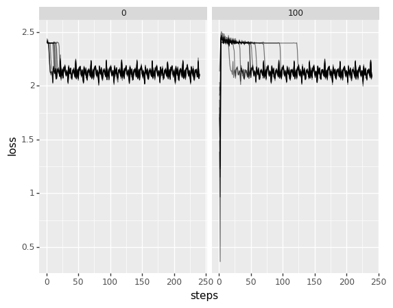
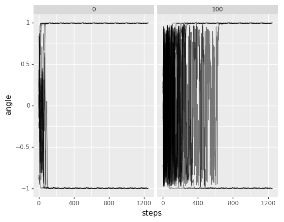

Temperatures¶
We now try to accelerate convergence by scaling up the temperature – or we’ll at least study the effect of such an influence.
[1]:
import patches
import lettertask
import torch.optim as optim
import torch
import torch.nn as nn
import numpy as np
import plotnine as gg
import lazytools_sflippl as lazytools
import torch.utils as utils
from tqdm import tqdm
import pandas as pd
[2]:
temperatures = range(0, 1100, 100)
list(temperatures)
[2]:
[0, 100, 200, 300, 400, 500, 600, 700, 800, 900, 1000]
[3]:
cbm = lettertask.data.CompositionalBinaryModel(
width=[5, 5],
change_probability=[0.05, 0.5],
samples=10000,
seed=1001
)
cts = patches.data.Contrastive1DTimeSeries(cbm.to_array())
cdl = utils.data.DataLoader(cts, batch_size=8, drop_last=True)
ideal = np.array([1]*5+[0]*5)/np.sqrt(5)
[4]:
ex_temp = patches.losses.LinearTemperature(5)
[5]:
ex_temp()
[5]:
0.0
[6]:
ex_temp()
[6]:
0.2
[7]:
for __ in range(5):
print(ex_temp())
0.4
0.6
0.8
1
1
[9]:
loss_dfs = []
angle_dfs = []
with tqdm(total=len(temperatures)*10*10) as pbar:
for temperature in temperatures:
for iteration in range(10):
ce = patches.networks.LinearScaffold(1, data=cts)
optimizer = optim.Adam(ce.parameters(), lr=0.01)
criterion = patches.losses.ContrastiveLoss(
loss=nn.MSELoss(),
temperature=patches.losses.LinearTemperature(temperature)
)
angles = []
loss_traj = []
running_loss = 0
for epoch in range(10):
running_loss = 0
for i, data in enumerate(cdl):
if i<len(cdl):
if i % 10 == 0:
est = list(ce.parameters())[0].detach().numpy()
angles.append(np.matmul(ideal, est.T)/np.sqrt(np.matmul(est, est.T)))
optimizer.zero_grad()
code = ce(data)
loss = criterion(code)
loss.backward()
optimizer.step()
running_loss += loss
if i % 50 == 49:
loss_traj.append(running_loss.detach().numpy()/50)
running_loss = 0
pbar.update(1)
df_angle = lazytools.array_to_dataframe(np.array(angles))\
.rename(columns={'dim0': 'steps', 'array': 'angle'})
df_angle['temperature'] = np.array(temperature)
df_angle['iteration'] = np.array(iteration)
df_loss = lazytools.array_to_dataframe(np.array(loss_traj))\
.rename(columns={'dim0': 'steps', 'array': 'loss'})
df_loss['temperature'] = np.array(temperature)
df_loss['iteration'] = np.array(iteration)
angle_dfs.append(df_angle)
loss_dfs.append(df_loss)
100%|██████████| 1100/1100 [59:02<00:00, 3.22s/it]
[10]:
df_loss = pd.concat(loss_dfs)
df_loss['steps'] += 1
df_loss['group'] = df_loss['temperature'].astype(str) + df_loss['iteration'].astype(str)
df_angle = pd.concat(angle_dfs)
df_angle['steps'] += 1
df_angle['group'] = df_angle['temperature'].astype(str) + df_angle['iteration'].astype(str)
[17]:
df_loss[np.isnan(df_loss['loss'])].groupby('temperature')['steps'].min()
[17]:
temperature
200 3
300 3
400 3
500 3
600 3
700 3
800 3
900 3
1000 3
Name: steps, dtype: int64
[18]:
df_loss = df_loss[df_loss['temperature'] <= 100]
df_angle = df_angle[df_angle['temperature'] <= 100]
[19]:
(gg.ggplot(df_loss, gg.aes(x='steps', y='loss', group='iteration')) +
gg.geom_line(alpha=0.5) +
gg.facet_wrap('temperature'))

[19]:
<ggplot: (8762346528292)>
[20]:
(gg.ggplot(df_angle, gg.aes(x='steps', y='angle', group='iteration')) +
gg.geom_line(alpha=0.5) +
gg.facet_wrap('temperature'))

[20]:
<ggplot: (8762362799855)>
[22]:
df_angle[abs(df_angle['angle']) >= 0.98].groupby(['iteration', 'temperature'])['steps'].min()
[22]:
iteration temperature
0 0 66
100 208
1 0 21
100 282
2 0 76
100 456
3 0 33
100 358
4 0 18
100 71
5 0 18
100 237
6 0 103
100 71
7 0 82
100 114
8 0 63
100 152
9 0 54
100 241
Name: steps, dtype: int64
This therefore doesn’t seem to help and I will return to such explorations at a later point. Possible variations include starting at a minimal threshold, starting at weights above one and decreasing them, and a peroidic weighting function.